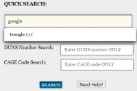
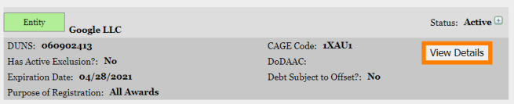
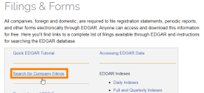
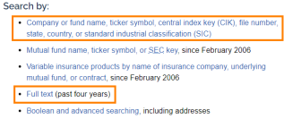
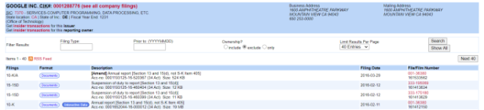

Web Presence
Web Presence
We can start to search the company name in a search engine(Google, Bing,...) in order to find the
company website.
From here we can understand them and search for:
•
Major businesses: Which is the businesses/businesses associated with the
target?
•
Major products or services: What does the target
organization produce? What are the brand names of its products or services? Which are its projects?
•
Physical locations: Where are the major facilities of the target
organization?
•
Corporate officers and other VIPs: Who is most
important in the target organization? Who are its leaders? Who is associated with its technical
infrastructure?
•
Email and contact information• Third
party and alternative
websites and sub-domains
◇
Linkedin
◇ Twitter
◇ Facebook
•
Major competitors:
Who competes with the target organization? Is it the market leader?
•
Recent press releases: What has the target enterprise told the public
lately about itself? What does it consider important from an image and marketing perspective?
We can put
all these informations in a mindmap
We can search more deeply using
Google
Dorks advanced search
SAM databaseOrganizations that operate globally
and that sell to the U.S. government or government agencies, are required to possess two codes:
•
DUNS code (DUNS and Bradstreet)
•
CAGE code (or NCAGE for a non U.S. business)
We can retrieve the
DUNS and CAGE code from this website
https://www.sam.gov/SAM/pages/public/searchRecords/search.jsfSEC EDGAR databaseAll U.S companies, foreign and
domestic, are required to file registration statements, periodic reports, and other forms electronically through
EDGAR(Electronic Data Gathering, Analysis, and Retrieval system) →
http://www.sec.gov/edgar.shtml
Gsalibrary https://www.gsaelibrary.gsa.gov/ElibMain/home.do